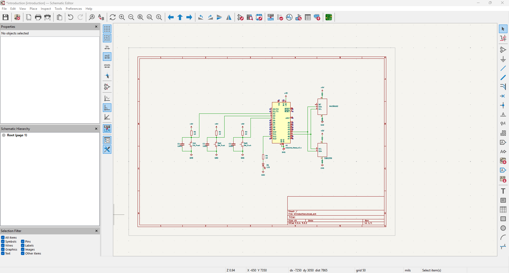

Projects
PCB Design for Wearable Health Monitor
Passion Project • Embedded Systems • Summer 2025
Designed the PCB for a wearable health monitor as a hands-on project to explore PCB design, I2C communication, embedded systems, and CAD. Using KiCad, I created custom PCB layouts based on existing commercial modules and integrated components like the MAX30102 pulse oximeter and SSD1306 OLED display. This project involved debugging communication issues, refining circuit design, and learning how to work with sensor data in real-time using an Arduino microcontroller.
Tools: KiCad, Arduino, MAX30102, SSD1306, I2C protocol, Embedded C
TODO: Take away the Arduino board, replace with only the bare microcontroller.
Media:
Multimodal Data Fusion for Emotion Recognition
CSCE790 • Neuromorphic & Edge Computing • Spring 2025
Group final project. I developed the multimodal data fusion model, which took the outputs of a Facial Emotion Recognition (FER) CNN model and a Sentiment Analysis (SA) model. Through concatenation, a simple but effective data fusion technique, our group achieved higher accuracy than either unimodal approach.
Media:
Our group won an opportunity for a free submission to the ICML conference - this was awarded by our professor, Dr. Ramtin Zand.Multithreaded two-way group chat
CSCE491 • Computer Networks • Fall 2024
Implemented a group chat system on the command line. TCP sockets were used to ensure reliable and orderly messaging. Due to multiple clients being allowed, they were tracked using a hashmap.
Embedded Systems
CSCE313 • Embedded Systems • Fall 2024
Developed bare metal embedded system. Configured the peripheral connections, debugged the system and JTAG and USB issues. With this project I developed a solid foundation for embedded systems design. I also explored implementing a mode-switchable system, modularity, and expanding features. By the end of the semester, I implemented VGA output, managed memory mapping, and pixel addressing.
Tools: Cyclone IV FPGA, Nios II processor, Quartus Prime, C, Verilog
Analysis of RC and RLC Filters
ELCT221 • Circuits II • Spring 2024
Group lab project. Used circuits and breadboards to create RC lowpass, RC highpass, and RLC Bandpass filters. Simulated each circuit configuration on LTSpice, and compared real vs. simulation. Analog Discovery's WaveForms software was used to display oscilloscope results. Our group analyzed magnitude and phase transfer plots for each circuit, as well as their corner frequency.
Up/Down Un/Sat Counter
CSCE211 • Digital Logic Design • Fall 2023
One of my personal favorite projects. This furthered my excitement for pursuing ECE.
Group project, cumulative from other gorup projects throughout the semester. We were tasked to create, from scratch (and handwritten karnaugh maps), a counter. This would be done exclusively through digital logic (AND, NOT, OR gates). Flip Flops (JK flip flop in this case) were also made by hand. The user could toggle whether the counter would saturate or not, or whether it'd count up or down.